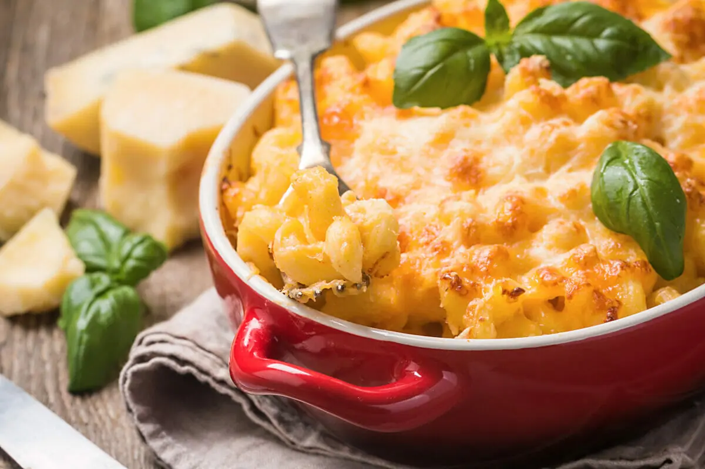

Macaroni and cheese omelette

| Ingredient |
Amount |
| uncooked macaroni |
100 g. |
| beaten egg |
5 pc. |
| grated cheese |
150 g. |
| chopped basil leaf |
2 tbsp. |
| olive oil |
1 tbsp. |
Order of preparation:
- Heat the oven to 180 degrees
- Cook macaroni in boiling salted water for 12 min.
- Drain carefully and let cool slightly
- Mix in the beaten eggs, half the cheese and chopped basil and season with salt and pepper
- Preheat the grill to maximum heat
- Heat the oil in an ovenproof frying pan, moving the pan so that the oil covers the sides.
Then pour the omelet mixture into the pan and smooth the surface
- Bake on low for 4 minutes and sprinkle with remaining cheese.
- Place the pan under the grill and cook until the top is golden
- Serve as is or top with grilled bacon